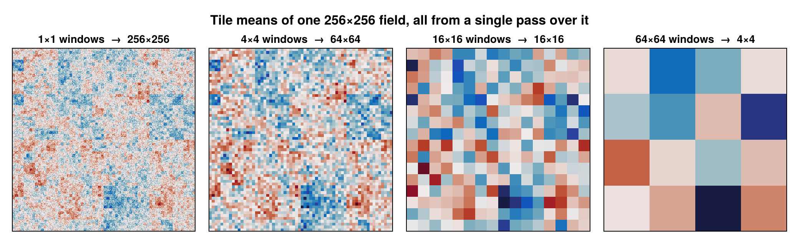
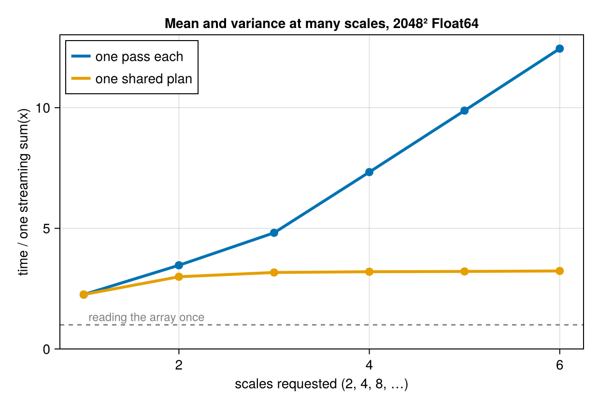
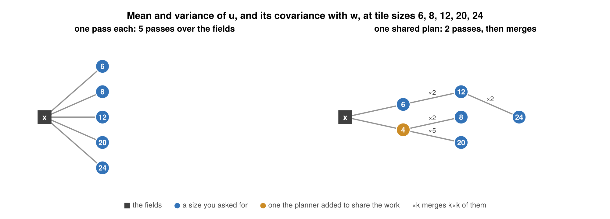

BlockwiseStatisticalReductions.jl
Mergeable statistics of an N-dimensional tensor over many window sizes at once, computed by a planned tree of reductions that touches the data as close to once as possible — on CPU, GPU, and across processes.
using BlockwiseStatisticalReductions
x = randn(4096, 4096)
r = blockstats(x, [2, 4, 8, 16, 32, 64]; stats = (Mean(), Var()))
r[(8, 8)].mean # 512×512 array of tile means
r[(64, 64)].var # 64×64 array of tile variances
scales(r) # the sizes that were produced
Those six scales cost one pass over the input. Each level is built by merging the level below it, not by re-reading x, so the whole tower runs at about twice the time of a single sum(x) — where computing the six independently would cost about seven.


What it is for
You have a big array and you want the same statistic at many resolutions: a variance at 2×2, 4×4, …, 64×64 tiles; a covariance in sliding 16×16 windows every 4 cells; a mean over anisotropic 3-D boxes whose vertical extent is fixed in metres rather than cells. Doing that naively means one pass per size. This package works out how to share the work instead.
The idea is that every statistic here is a mergeable monoid over sufficient statistics — a variance is (n, mean, M2), and two of those combine into one without revisiting the data. Given that, a window of size 64 is the merge of two windows of size 32, a window of size 12 is the merge of a window of size 8 and a window of size 4 shifted by 8, and so on. The planner searches that space of derivations and picks the cheapest tree.
Where to start
- Statistics — what an accumulator is, which ones ship, and how several are fused into one pass.
- Windows — tiles, strides, anchors, and what happens at the edges.
- Scale specifications — how to ask for a set of window sizes.
- The planner — how the tree is chosen, and why it is fast.
- Numerics — Welford, Chan/Pébay, and shifted accumulation.
- Weights and gaps — weighted statistics and skipping non-finite data.
- Labelled axes — axis names, coordinates, DimensionalData, NetCDF, Zarr.
- Backends — serial, threaded, GPU.
- Partitioned tensors — MPI and Distributed.
- Performance — what it costs, and how to check that on your machine.
- API reference.
Installation
import Pkg
Pkg.add(url = "https://github.com/jbphyswx/BlockwiseStatisticalReductions", subdir = "julia/BlockwiseStatisticalReductions.jl")